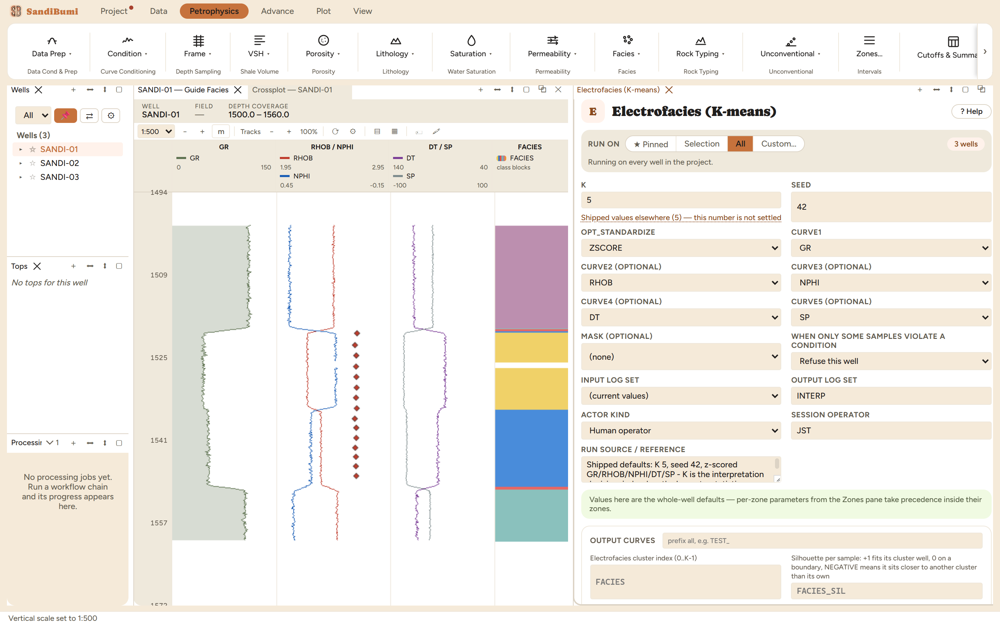

Electrofacies clusters each well's samples in the space of the supplied curves (z-scored by default so mixed units are comparable) into K classes. The convention worth knowing: labels are ordered by the mean of the first supplied curve, usually GR, so FACIES 0 is the cleanest class and the numbering is monotone in shaliness. Clustering is per well and deterministic for a given seed.
Shipped defaults throughout: K 5, seed 42, z-scored GR/RHOB/NPHI/DT/SP. K is the interpretation decision here, so start near the number of lithologies you expect and judge the result on a log, not on a statistic. Any curve slot with no data is dropped; a sample missing any present curve gets FACIES = MISSING.

On these wells: 3 clean. The pooled census over 1164 classified samples: 267 / 297 / 15 / 198 / 387 across facies 0–4. Class 2's 15 samples are the number to interrogate: a class that thin is either a real thin lithology or K set one too high. Put FACIES in a track as class blocks (the Facies layout ships with the block style) and judge it against the log before anything consumes it.